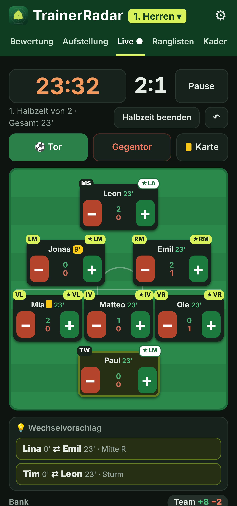
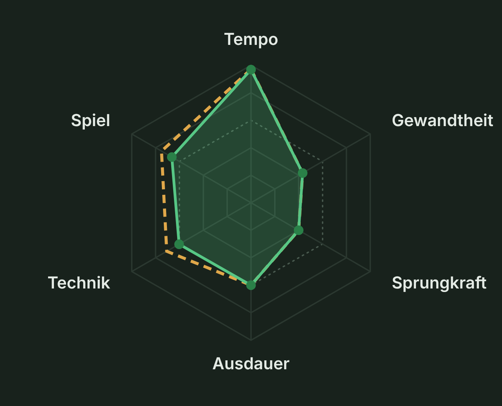

Weniger
Bauchgefühl.
Mehr
Überblick.
Die kostenlose Trainer-App für jede Mannschaft –
von der Jugend bis zu den Senioren.
von der Jugend bis zu den Senioren.
01
Live am SpielfeldrandPlus & MinusTore & VorlagenKarten
02
Faire SpielzeitSpielzeit-AmpelWechselvorschlägeTurniermodus
03
Gerechtes StärkenprofilTrainerbeobachtungLeistungsmessungLive-Erfassung
04
Beste AufstellungStärkste Elf★ beste PositionFunino bis 11 gegen 11
05
Entwicklung im BlickPotenzial & FormZieleSaisonbericht
06
Fürs ganze TrainerteamMehrere MannschaftenCo-TrainerOffline


In 3 Schritten startklar
1QR-Code scannen
2Zum Home-Bildschirm
3Kader anlegen
Kostenlos · ohne Anmeldung · Daten bleiben auf deinem Handy

cschwarte82.github.io/Wacker